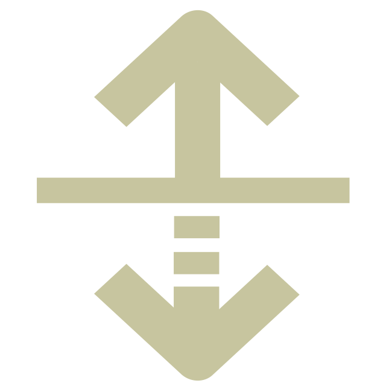

enter expression

In basic algebra we all learned the equation \(y=mx+b\).

We have a relationship between two variables, \(x\) and \(y\). This relationship tells us that out of every point \((x,y)\) in all of the coordinate space, there are a certain group of points that has their \(y\) component equal to their \(x\) component, times \(m\) and plus \(b\). This group of points is represented by the line you see.
 The relation \(e^y+\ln{x}=xy\). Credit goes to desmos.com for the graph.
The relation \(e^y+\ln{x}=xy\). Credit goes to desmos.com for the graph.
This means that a relationship such as \(e^y+\ln{x}=xy\) is just as valid as \(y=mx+b\), there will be a point in the coordinate space whenever \(e^y+\ln{x}\) happens to equal \(xy\).
However, most graphers you find, either online or on your calculator, take the relation in "\(y=\)" form. Because iterating through all possible points in the coordinate plane (or in your current domain) is often computationally expensive ‒ especially for a calculator ‒ they need a shortcut to compute the points which lie on the graph. When it is in "\(y=\)" form, the computer can just iterate through the possible values of \(x\) in the domain and find the corresponding \(y\) value to go with it with some degree of accuracy.
The concept is identical for three dimensions. There is a relation between 3 variables instead of 2, and the graph is made up of all the points from the 3D coordinate space which makes the expression true.
 The relation \(z=x\sin{x}+y\sin{y}\) on the domain \(x:[-5,5], y:[-5,5]\). This
is a representation of all the points for which this function of \(z\) is true.
The relation \(z=x\sin{x}+y\sin{y}\) on the domain \(x:[-5,5], y:[-5,5]\). This
is a representation of all the points for which this function of \(z\) is true.
The computational difficulties are compounded in three dimensions. Implicitly graphing, that is, iterating through all the possible points in the domain, is impossible within a reasonable amount of time. Therefore I have simplified expressions to functions of two variables, so that the computer needs only to iterate through two dimensions and compute the third.
Usage
Koval's 3D Grapher is pretty simple. Choose the coordinate type at the top of the left hand
column (Cartesian, Cylindrical or Spherical). Then type in whatever equation you want with
the 3 inputs at the top. Press the green graph button on the bottom or press control-enter.
You can rotate the graph by clicking and dragging the graph. You can also zoom in and out by
scrolling.
You can toggle color, axes, perspective, directional lighting, mesh and color scheme
with their respective checkboxes at the bottom.
The "Points Wide" input is how many points are plotted on each of the axes. So 50 points
wide would be 50 points on one axis and 50 on the other for a total of 2500 points plotted
total. Although you can set this number to whatever you want, I would recommend no more than 350
for usable rotation without color and no more than 200 with color. However, if you want
a still image (technically rotatable, just takes a very long time), you can set this arbitrarilly
high, depending on how long you want to wait, and, of course stuff like memory. 1000 is usually
sufficient for high quality shots.
I used MathQuill
for the math text boxes and
Math.js
for evaluation.
Operations
These are the basic operations available.
| Operation | Meaning | Example |
|---|---|---|
| + | Addition | \(x+y\) |
| - | Subtraction | \(x-y\) |
| * | Multiplication | \(x*y\) or \(xy\) |
| / | Division | \(\frac{x}{y}\) |
| ^ | Exponentation | \(x^y\) |
| |...| | Absolute Value* | \(|x|\) |
| ! | Factorial | \(x!\) |
Functions
Functions take 1 or more value as an input and give an output. For common functions, such as
\(\sin(x)\), simply type "sin x". For multi-input functions, such as the \(\max(x,y)\) function,
seperate the inputs with commas. For non-standard functions (like \(\text{floor}(x)\)), type "\"
(backslash), followed by the name of your function.
Note: Make sure to put parentheses around the function inputs when the
grouping is not clear: \(\ln x + y \neq \ln{(x+y)}\). Pro tip: select whatever you want to put
in parentheses and press "(".
| Function Name | Meaning | Need Backslash? |
|---|---|---|
| \(\text{abs}(x)\) | Absolute Value | Yes |
| \(\text{acos}(x)\) | Arccosine (or inverse cosine) | Yes |
| \(\text{acosh}(x)\) | Inverse hyperbolic cosine function | Yes |
| \(\text{acot}(x)\) | Inverse cotangent function | Yes |
| \(\text{acoth}(x)\) | Inverse hyperbolic cotangent function | Yes |
| \(\text{acsc}(x)\) | Inverse cosecant function | Yes |
| \(\text{acsch}(x)\) | Inverse hyperbolic cosecant function | Yes |
| \(\text{add}(x,y)\) | Adds two numbers or matrices together. I have no idea when you would ever use this because it is identical to \(+\) | Yes |
| \(\text{asec}(x)\) | Inverse secant function | Yes |
| \(\text{asech}(x)\) | Inverse hyperbolic secant function | Yes |
| \(\text{asin}(x)\) | Inverse sine function | Yes |
| \(\text{asinh}(x)\) | Inverse hyperbolic sine function | Yes |
| \(\text{atan}(x)\) | Inverse tangent function | Yes |
| \(\text{atan2}(y,x)\) | Inverse tangent function, extends \(\text{atan}(x)\) function to account for all angles. | Yes |
| \(\text{atanh}(x)\) | Inverse hyperbolic tangent function | Yes |
| \(\text{bellNumbers}(n)\) | Returns the \(n^{\text{th}}\) Bell Number. This function only accepts positive integers. | Yes |
| \(\text{bitAnd}(x,y)\) | Bitwise AND function. | Yes |
| \(\text{bitNot}(x,y)\) | Bitwise NOT function. | Yes |
| \(\text{bitOr}(x,y)\) | Bitwise OR function. | Yes |
| \(\text{bitXor}(x,y)\) | Bitwise XOR function. | Yes |
| \(\text{catalan}(n)\) | Returns the \(n^{\text{th}}\) Catalan Number. This function only accepts positive integers. | Yes |
| \(\text{cbrt}(x)\) | Cube root function. Equivalent to raising to the \(1/3\) power. | Yes |
| \(\text{ceil}(x)\) | Ceiling function. Returns the smallest integer greater than \(x\) | Yes |
| \(\text{combinations}(n,k)\) | Number of combinations of picking \(k\) items from \(n\) items. Note that \(k\leq n\) and both \(k\) and \(n\) are positive integers. | Yes |
| \(\text{complex}(r, im)\) | creates a complex number from a real and imaginary part. | Yes |
| \(\text{composition}(n,k)\) | The number of ways to represent \(n\) as the sum of \(k\) numbers. | Yes |
| \(\text{concat}(x,y,z...)\) | Concatenates two or more matrices together. | Yes |
| \(\text{conj}(x)\) | Returns the conjugate of a complex number. | Yes |
| \(\text{cos}(x)\) | Cosine function | No |
| \(\text{cosh}(x)\) | Hyperbolic cosine function | No |
| \(\text{cot}(x)\) | Cotangent function | No |
| \(\text{coth}(x)\) | Hyperbolic cotangent function | No |
| \(\text{cross}(x,y)\) | Returns the cross product of two vectors. | Yes |
| \(\text{csc}(x)\) | Cosecant function | No |
| \(\text{csch}(x)\) | Hyperbolic cosecant function. | No |
| \(\text{det}(x)\) | Calculates the determinant of a matrix. The matrix must be square. | No |
| \(\text{distance}(x,y)\) | Calculates the Euclidian distance between two points. The points may be two or three dimensional. | Yes |
| \(\text{dot}(x)\) | Calculates the dot product of two vectors. | Yes |
| \(\text{dotDivide}(x,y)\) | Calculates the element-wise division of two matrices. | Yes |
| \(\text{dotMultiply}(x,y)\) | Calculates the element-wise multiplication of two matrices. | Yes |
| \(\text{dotPow}(x,y)\) | Calculates the element-wise power (\(x^y\)) of two matrices. | Yes |
| \(\text{exp}(x)\) | Calculates \(e^x\). | No |
| \(\text{factorial}(x)\) | Calculates the factorial of a number. This is the same as the \(!\) operator. \(x\) must be positive | Yes |
| \(\text{fix}(x)\) | Rounds \(x\) toward zero. | Yes |
| \(\text{floor}(x)\) | Rounds \(x\) toward negative infinity. | Yes |
| \(\text{gamma}(x)\) | The Gamma function. An extension of the factorial function. | Yes |
| \(\text{gcd}(x,y)\) | Computes the greatest common divisor among \(x\) and \(y\) | No |
| \(\text{hypot}(x,y,...)\) | Calculates the hypotenusa of the values. This is equal to \(\sqrt{x^2+y^2...}\) | Yes |
| \(\text{im}(x)\) | Returns the imaginary portion of \(x\). | Yes |
| \(\text{inv}(x)\) | Calculates the inverse of a matrix. The matrix must be square. | Yes |
| \(\text{kldivergence}(x,y)\) | Computes the Kullback-Leibler divergence between two distributions | Yes |
| \(\text{lcm}(x)\) | Calculates the least common multiple of two numbers. | No |
| \(\text{leftShift}(x, y)\) | Bitwise shifts \(x\) left by \(y\) bits. For all you programmers it is equal to \(x << y\) | Yes |
| \(\text{log}(x, y)\) | Calculates \(\log_y{x}\). If \(y\) is ommitted, then it defaults to \(\log_{e}{x}\). | No |
| \(\text{max}(x, y, ...)\) | Calculates the maximum value out of the inputs. | No |
| \(\text{mean}(x, y,...)\) | Calculates the mean of the inputs. | Yes |
| \(\text{median}(x, y,...)\) | Calculates the mediam of the inputs. | Yes |
| \(\text{min}(x, y, ...)\) | Calculates the minimum value out of the inputs. | No |
| \(\text{mod}(x, y)\) | Calculates \(x\,\%\,y\) (for programmers), also known as the modulus. | Yes |
| \(\text{mode}(x, y, ...)\) | Calculates the most common value among the inputs. | Yes |
| \(\text{nthRoot}(x, n)\) | Calculates the \(n^{\text{th}}\) root of \(x\). \(n\) defaults to two if not provided. | Yes |
| \(\text{pickRandom}(x)\) | Picks a random element from the 1-dimensional array \(x\) | Yes |
| \(\text{random}(x,y)\) | Picks a random number between \(x\) and \(y\) (inclusive only on minimum). It defaults to zero if \(x\) is not provided, and \([0,1]\) if neither \(x\) nor \(y\) is provided. | Yes |
| \(\text{randomInt}(x,y)\) | Picks a random integer between \(x\) and \(y\) (inclusive only on minimum). It defaults to zero if \(x\) is not provided. | Yes |
| \(\text{re}(x)\) | Returns the real part of the complex number \(x\) | Yes |
| \(\text{rightArithShift}(x, y)\) | Bitwise shifts \(x\) right arithmetically by \(y\) bits. For all you programmers it is equal to \(x >> y\) | Yes |
| \(\text{rightLogShift}(x, y)\) | Bitwise shifts \(x\) right logically by \(y\) bits. It is equal to \(x >>> y\) | Yes |
| \(\text{sec}(x)\) | Calculates the secant of \(x\). | No |
| \(\text{sech}(x)\) | Calculates the hyperbolic secant of \(x\). | No |
| \(\text{sign}(x)\) | Calculates the sign of \(x\). This is \(-1\) when \(x<1\), \(1\) when \(x>1\) and \(0\) when \(x=0\). | Yes |
| \(\text{sin}(x)\) | Calculates the sine of \(x\) | No |
| \(\text{sinh}(x)\) | Calculates the hyperbolic sine of \(x\) | No |
| \(\text{sqrt}(x)\) | Calculates the square root of \(x\) | No |
| \(\text{std}(x,y,...)\) | Calculates the standard deviation of the inputs. | Yes |
| \(\text{stirlingS2}(x,y)\) | Calculates the stirling number of the second kind | Yes |
| \(\text{tan}(x)\) | Calculates tangent of \(x\). | No |
| \(\text{tanh}(x)\) | Calculates hyperbolic tangent of \(x\). | No |
| \(\text{trace}(x)\) | Calculates trace of matrix \(x\), the sum of the elements on the main diagonal. \(x\) must be square. | Yes |
| \(\text{transpose}(x)\) | Reflects each element of the square matrix \(x\) over its main diagonal. | Yes |
Don't see the function you'd like? Check out the full list of functions from mathjs.org, at your own risk, of course.
Although they weren't originally planned, matrices are well supported within the mathjs
framework, so they are largely suppored here are well.
Here's an example of a 2 by 2 matrix: \([[1,2][3,4]]\).
\([1,2;3,4]\) is also acceptable.
Cartesian points are defined by three variables: \(x\), \(y\), and \(z\). Each variable determines a distance from the origin along a dimension. The three dimensions, the \(x\) axis, \(y\) axis, and \(z\) axis are perpendicular to each other, with \(x \times y = z\) (\(x\) cross \(y\)).
Basically, its an extension of your basic \(x\) \(y\) coordinate plane. There's just another dimension sticking up out of it.
 \(z=\frac{3}{2}\cos{\frac{xy}{3}}\) on \(x:[-10,10], y:[-10,10], z:[-10,10]\)
\(z=\frac{3}{2}\cos{\frac{xy}{3}}\) on \(x:[-10,10], y:[-10,10], z:[-10,10]\)
Input
You can enter equations in terms of any of the three variables. However, as discussed in the
introduction, this grapher does not support implicit graphing, so a variable must be
in terms of the other two. If you find yourself wanting to create equations like
\(10^2=x^2+y^2+z^2\), consider another coordinate system, such as
the spherical system.
Domain
Most of the functions you can make continue on forever in all directions,
so obviously those can't be shone all at once.
You can control what part of the function you see with the domain inputs:
\(x\), \(y\) and \(z\) minimum and maximum.
Cylindrical coordinates are defined by three variables: \(\rho\), \(\phi\), and \(z\). \(\rho\) is the distance from the z axis (analogous to \(r\) in polar coordinates), \(\phi\) is the angle from the positive \(x\) axis (analogous to \(\theta\) in polar coordinates), and \(z\) is the height from the \(x\) \(y\) plane.
 \(\rho=4\): Each point is 4 away from the \(z\) axis.
\(\rho=4\): Each point is 4 away from the \(z\) axis.
 \(\phi=\frac{\pi}{4}\): Each point, when connected to the \(z\)-axis,
makes a \(\frac{\pi}{4}\) angle with the positive \(x\) axis.
\(\phi=\frac{\pi}{4}\): Each point, when connected to the \(z\)-axis,
makes a \(\frac{\pi}{4}\) angle with the positive \(x\) axis.
 \(z=1\): Each point is 1 from the \(x\) \(y\) axis.
\(z=1\): Each point is 1 from the \(x\) \(y\) axis.
Input
You may enter equations in terms of any variable.
To type a greek letter, press the backspace key followed
by the name of the letter - "\rho" : \(\rho\), "\phi": \(\phi\).
Domain
Remember that the function doesn't stop after it
runs off the screen!
You may enter a minimum and maximum value for all three variables using the inputs
provided.
A spherical coordinate is defined by its euclidean distance from the origin, \(r\), the angle it forms with the \(z\) axis and the positive \(x\) axis, \(\theta\), and the angle it forms with the origin and the \(x\) \(y\) plane, \(\phi\). It's the 3D analogue of the polor system.
 \(r=5\): Each point is 5 away from the origin.
\(r=5\): Each point is 5 away from the origin.
 \(\theta=\frac{\pi}{4}\): Each point, when connected to the \(z\) axis,
makes a \(\frac{\pi}{4}\) angle with the positive \(x\) axis.
\(\theta=\frac{\pi}{4}\): Each point, when connected to the \(z\) axis,
makes a \(\frac{\pi}{4}\) angle with the positive \(x\) axis.
 \(\phi=\frac{\pi}{4}\): Each point, when connected to origin,
makes a \(\frac{\pi}{4}\) angle with the \(x\) \(y\) plane.
\(\phi=\frac{\pi}{4}\): Each point, when connected to origin,
makes a \(\frac{\pi}{4}\) angle with the \(x\) \(y\) plane.
Input
You may enter equations in terms of any variable.
To type a greek letter, press the backspace key followed
by the name of the letter - "\theta" : \(\theta\), "\phi": \(\phi\).
Domain
You can change the maximum and minimum of each variable with the text boxes
in the left column.
Parametric coordinates are a very useful way to representing functions with an additional
two variables - \(u\) and \(v\). Instead of setting one variable equal to a combination of
the other two variables, you set each variable equal to a combination of \(u\) and \(v\).
Then the grapher iterates through the parametric variables (\(u\) and \(v\)) and determines
the corresponding point from the three equations.
Actually, this is actually Koval's 3D Grapher graphs all of your functions, whether
you realize it or not.
 With parametric variables, you can make all sorts of cool shapes, like
this donut one. It's technically a torus, and its equation(s) in
cylindrical coordinates: \(\rho=\cos{v}+1.5\), \(\phi=u\), \(z=\sin{v}\).
With parametric variables, you can make all sorts of cool shapes, like
this donut one. It's technically a torus, and its equation(s) in
cylindrical coordinates: \(\rho=\cos{v}+1.5\), \(\phi=u\), \(z=\sin{v}\).
Simply define all of the variables in terms of \(u\) and \(v\) and it will graph your function parametrically. Also, the domain for \(u\) and \(v\) will automatically appear.
Plotting
You can plot individual points with the plot functionality. Click the "Plot" button (on the same
row as "Cartesian", "Cylindrical" and "Spherical"). Then click the coordinate system you would like the use.
A table will appear, which you can enter numerical values for points. Click the graph button to plot the points.
Note:You can copy and paste a table from Excel or Google Sheets.


Animation is used for creating a video of a transformation of a graph.
For example, if you wanted to see the effect on \(z=\sin{2x}+\sin{2y}\) of changing the
coefficient of \(x\), you could substitute a new variable, \(a\), in for 2:
\[z=\sin{ax}+\sin{2y}\]
Then you can animate with respect to a:

This will iteratate through 40 graphs, each time varying the value of \(a\) slightly (from 2 to 3), to produce
a smooth animation.
When you press "Animate", Koval's 3D Grapher will begin its iterations. Depending on the quality
of your original graph (Points Wide) and whether you are coloring your graph, this may take awhile.
Expect at least a minute on a low quality animation and upwards of 30 minutes to an hour for full
quality, sophisticated animations.
When it is done animating, you will see the (non-rotatable) result in a popup. You can vary the speed of the
animation and how it loops. You will also have the option to export, which results in a video in the
WebM format.
Note that you may change as many variables as you want simultaneously, but each variable name must
only be a single letter. Please be aware that making \(e\) a variable overrides the mathematical
constant \(e\).
Note that variables are not restricted to equations, the domain inputs accept expressions as well.
You see that button in the upper right hand corner, next to the "help" button?
That's the export button. You can save your graph as a .png, .bmp, or .jpeg and share
it with your friends!
You can also export animations, see Animations.
v 1.1 March 30, 2016
v 1.2 April 1, 2016
v 1.3 May 15, 2016
v 1.4 May 19, 2016
v 1.5 May 24, 2016
v 1.6 June 19, 2016
v 1.7 September 2, 2016
Hey! My name is Alan.
I'm 17 years old and a junior senior in high school. I made this website almost entirely from
scratch over the course of 9 months.
Programming has been a hobby of mine for several years now. I started programming on my
Ti-84 calculator back in 7th grade. I worked my way up to Java, and then to Javascript/HTML
and web design. Suffice to say, I've moved beyond my first quadradic formula program! Other
than programming, I enjoy playing ping pong and scholastic bowl (it's a cross between Jepardy
and Family Feud), as well as competing on my high school's math team.
I'd love your feedback! If you found any bugs, or would like to suggest improvements,
email me at feedback@alankoval.com.
Thought this website was super cool?
Make sure to share this website with your favorite social media outlet!